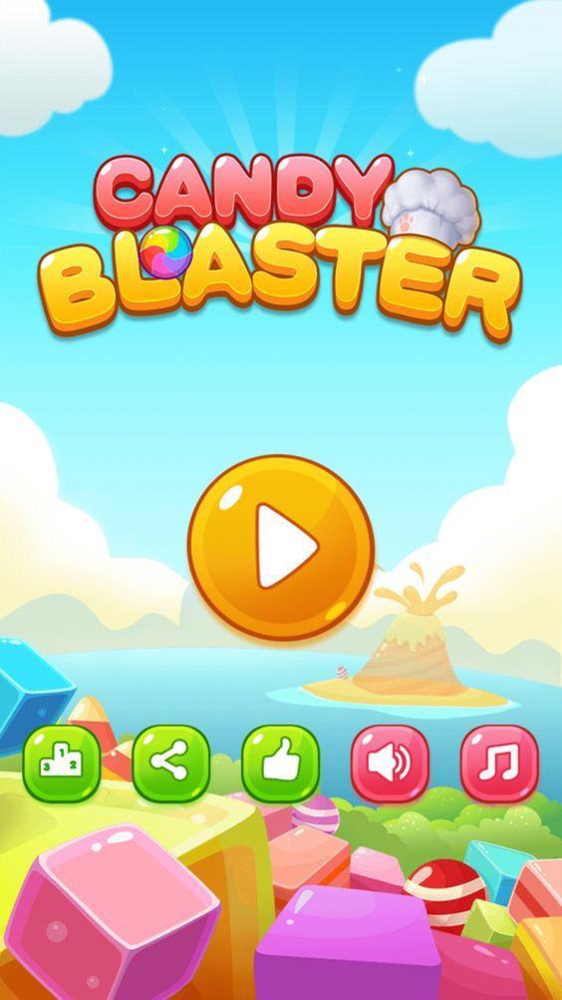
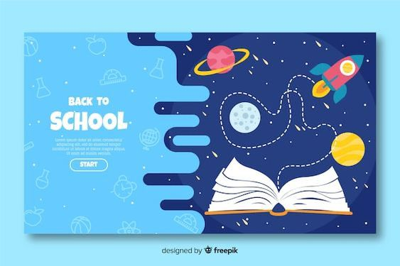
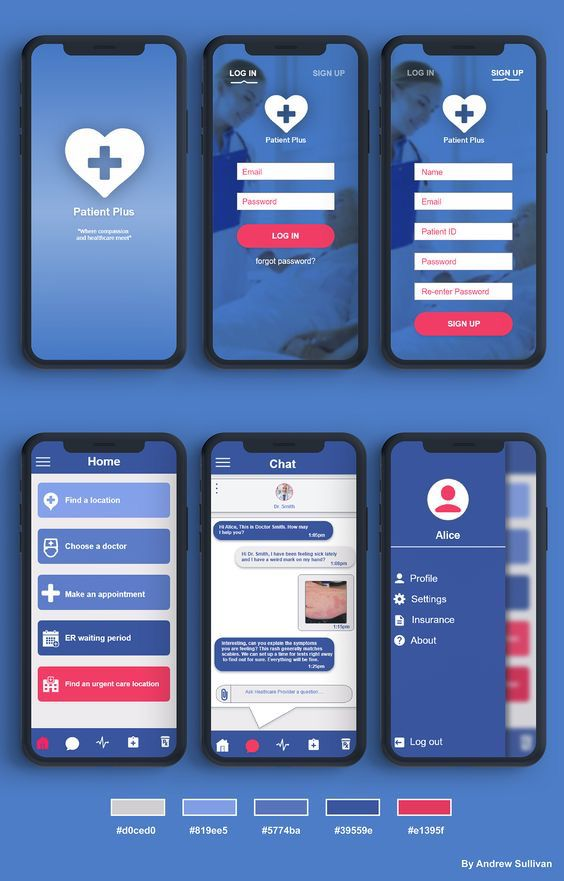

In this first project, I designed a casual game called Candy Blaster with a colorful candy theme. My goal was to create an engaging, cheerful, and user-friendly interface suitable for all types of players. The main screen features a large play button in the center for quick access to the game, along with additional icons such as settings, sound, and share to enhance navigation.I chose bright colors and playful visual elements to deliver a fun and interactive gaming experience.

I designed a library website focused on exploring knowledge. With an open-book and space concept, it allows users to easily search and borrow books through a simple and engaging interface.

I developed the UI/UX for Patient Plus, a health app that lets users register, find healthcare services, choose doctors, and chat for consultations. The design is clean, professional, and user-friendly.